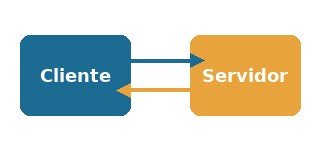

1. Introdução
Praticamente nenhum sistema moderno funciona sozinho. Quando alguém paga uma compra pelo celular ou entra em um aplicativo usando a conta do Google, existe uma troca de mensagens entre programas diferentes acontecendo nos bastidores. Essa troca acontece por meio de APIs (Interfaces de Programação de Aplicações).
Uma API é o contrato que define como um software pode pedir dados ou serviços de outro, sem precisar conhecer sua implementação interna.
2. Fundamentos: o que é uma API
Uma API pode ser entendida como o cardápio de um restaurante: o cliente não precisa entrar na cozinha, apenas escolhe uma opção e recebe o resultado pronto. Na web, quem faz o pedido é o cliente e quem responde é o servidor.
Elementos de uma requisição
- Endpoint: endereço para onde a requisição é enviada.
- Método HTTP: GET (ler), POST (criar), PUT (atualizar), DELETE (remover).
- Cabeçalhos: informações extras, como as credenciais.
- Corpo (body): os dados enviados, normalmente em JSON.
- Código de status: informa se a resposta deu certo ou não.
Passo a passo
- O cliente monta a requisição.
- A requisição viaja até o servidor.
- O servidor processa o pedido.
- O servidor devolve uma resposta.

3. Tipos de API
Quanto ao acesso
- Públicas: abertas a qualquer desenvolvedor, como o ViaCEP.
- De parceiros: usadas só por empresas conveniadas.
- Privadas: usadas somente dentro da própria empresa.
Quanto ao estilo
- REST: o estilo mais usado na web.
- SOAP: mais antigo, comum em sistemas bancários.
- GraphQL: o cliente escolhe exatamente os dados que quer.
- gRPC: usado internamente entre sistemas, é bem rápido.
- WebSocket: mantém uma conexão aberta, usado em chats.
4. Integrações
Integrar é fazer sistemas diferentes trabalharem juntos. Alguns exemplos do dia a dia:
- Pagamentos: lojas virtuais usam APIs como Stripe ou Mercado Pago.
- Login social: o botão "Entrar com o Google" usa OAuth 2.0.
- Mapas: apps de entrega usam APIs de mapas para traçar rotas.
5. Ferramentas
- Postman: monta requisições sem precisar escrever código.
- Swagger: gera documentação interativa de uma API.
- cURL: comando usado para testar um endpoint rapidamente.
6. Segurança
As APIs lidam com dados sensíveis, então precisam de cuidado extra.
- API Key: chave simples que identifica a aplicação.
- OAuth 2.0: autoriza o acesso sem entregar a senha.
- JWT: token que carrega os dados da sessão.
- Usar sempre HTTPS.
7. Conclusão
As APIs deixaram de ser um detalhe técnico para se tornarem a base do software atual. Entender como elas funcionam é essencial para quem trabalha com desenvolvimento web.